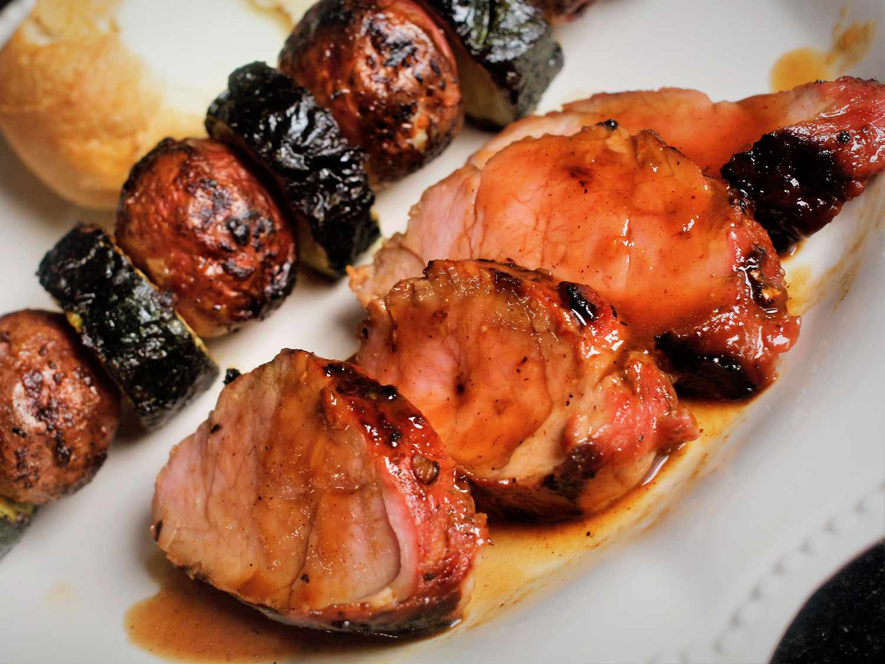

Marinated Grilled Pork Tenderloin Recipe

Description
A pork tenderloin is a long, narrow, boneless cut of meat that comes from the muscle that runs along the backbone. A
pork loin is wider and flatter, and can be a boneless or bone-in cut of meat. Pork loin comes from the back of the
animal.
Ingredients
Marinade:
- ¼ cup honey
- ¼ cup soy sauce
- ¼ cup oyster sauce
- 2 tablespoons brown sugar
- 4 teaspoons minced fresh ginger root
- 1 tablespoon ketchup
- 1 tablespoon minced garlic
- 1 tablespoon chopped fresh parsley
- ¼ teaspoon onion powder
- ¼ teaspoon cayenne pepper
- ¼ teaspoon ground cinnamon
Pork:
- 2 (12 ounce) pork tenderloins
Recipe
-
Make marinade: Whisk together honey, soy sauce, oyster sauce, brown sugar, ginger, ketchup, garlic, parsley, onion
powder, cayenne pepper, and cinnamon in a medium bowl; pour into a resealable plastic bag.
-
Place pork tenderloins into the bag; coat with marinade, squeeze out excess air, and seal the bag. Marinate in the
refrigerator for at least 1 hour or up to 24 hours.
-
Preheat the grill for medium heat and lightly oil the grate.
-
Remove pork tenderloins from marinade; shake off excess. Discard remaining marinade.
-
Cook pork tenderloins on the preheated grill until no longer pink in the center, 20 to 30 minutes, turning occasionally.
An instant-read thermometer inserted into the centers should read at least 145 degrees F (63 degrees C).
Back to homepage